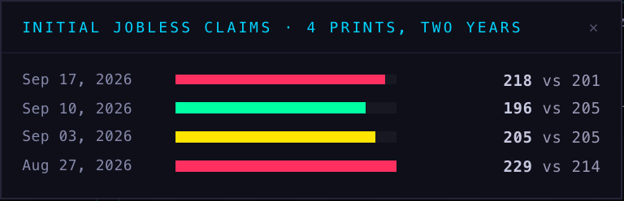

The page on the left of each pair is the 16 August prototype. The page on the right is the hub as it now stands, running the same rules. Both are live on this page, so what moves here is what moves in the hub — the speeds are the real ones, not a description of them.
Still. No flash. Named.
Breathes at 2.4s, in its own category colour.
1.1s. Tightening.
0.38s hard pulse. Only ever ONE item does this.
Stops dead, actual against estimate, its own lane on the left. Clears on click or at the end of the day. Never takes an upcoming slot.
The names collapse to a swarm of category colours and a count. The density is the message.
A quiet, non-flashing cluster. A warning, not an alarm.
These are photographs of the real dashboard at a fixed clock, with the calendar answered from fixed rows and every other request refused. Nothing left this machine.
| 22 September build | now | |
|---|---|---|
| more than an hour out | grey, still | still, and named — unchanged |
| inside the hour | orange, but motionless | breathes, 2.4 seconds |
| inside ten minutes | nothing of its own | 1.1 seconds, tightening |
| at the minute | a 1.4-second pulse | 0.38 seconds, and only one thing ever does it |
| the colour | orange for everything | the category's own colour, so the flash says what kind of number it is |
| a number that has landed | took one of the three slots | its own lane on the left, beside the three, with a ✕ |
| four or more the same day | showed the first three by name | stops naming them: colours and a count |
| a loaded day ahead | nothing | one quiet line, nothing moving |
| behind a landed number | nothing | two years of that same print |
Measured today against the calendar table, not assumed. Every release stored today was written in a single batch at 11:05 New York time: the 09:45 PMIs were 80 minutes late to the store, the 10:30 oil numbers 35, the 07:00 mortgage numbers 245. Across the last nine days the writes land at 01:47, 11:05, 13:47 and 19:05 — a few times a day, not hourly.
So the hub now asks once a minute from one minute before a release to fifteen minutes after, and stops the moment the number is stored. That puts the number on screen within about a minute of the store having it. It cannot beat the store itself: while the calendar is written a few times a day, "within minutes of the release" is not available to the hub at all, and the only thing that would change it is how often that job runs.
Counted, not guessed — the calendar holds, for the last 24 months: 97 jobless-claims prints, 30 S&P Global composite PMIs, 24 payrolls, 22 durable-goods, 22 new-home-sales and 21 inflation prints. That is what the panel reads, one page, from the same table.

The prototype sets the name of a release white at its last two states. Nothing on Scintilla is white, so the build uses the same ink as the rest of the hub and lets the weight carry it. The left-hand panes above are shown with that one substitution; everything else in them is the prototype's own stylesheet.